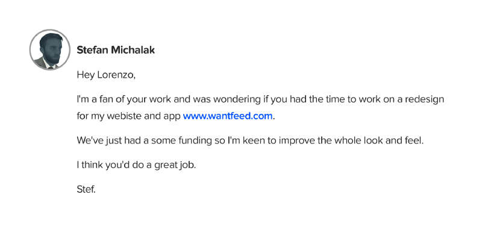

Статья #1
Белорусский Государственный Технологический Университет
Цифры не важны: как набрать 100 тысяч просмотров на Behance
Перевод Владимира Клименко. Оригинал - Лоренцо Боччи
Никита Левченко (@yoursweetacid)
Моя стратегия в 2016 году
Behance — часть моего ежедневного рабочего процесса. Поиск выдающихся работ и добавление их в мои коллекции это очень важная часть моей работы. В начале 2016 года я решил подняться в рейтингах, чтобы меня могли легче найти, установив в качестве планки 100k просмотров. В этой статье я объясню как мне удалось достичь этого результата.

Первое и самое главное: будьте умными и играйте по правилам. Проведя небольшое исследование, я выяснил, что
обычно “редизайн известных брендов” собирает в среднем по 20k просмотров. Так что я составил крайне мудреную
формулу и составил для себя план: сделать 5 редизайнов для 5 известных брендов.
Я хотел выжать максимум из этой затеи. В то время я переключался с Photoshop’а на Sketch и мне требовалось как
можно больше практики. Также, работая над клиентскими проектами, я сталкивался с большим количеством
ограничений. Я решил, что хорошей идеей будет использовать этот сайд-проект как песочницу для развития моих
навыков.
Так как я еще и front-end разработчик и мне хотелось побольше практики, я решил сделать из этого отдельный
веб-сайт.
Желая не только извлечь из этого пользу, но и дать что-то дизайн-сообществу взамен, я решил разрешить бесплатно
скачивать исходники. Но вместо того, чтобы дать прямую ссылку на файлы, я отправлял их с Behance сначала на
сайт, на котором они должны были сначала поделиться ссылкой на проект в Твиттере, чтобы скачать файл.
Бесплатные файлы и сообщество Твиттера значительно увеличили охват всего проекта.
Увеличивайте охват через сторонние каналы
Несколько месяцев назад я прочитал статью о сообществе Behance, в которой говорилось, что около 90% просмотров профиля на Behance приходят со сторонних источников. Это заставило меня задуматься. Возьмем, например, Рамина Насибова, профиль которого просматривали более 1 720 000 раз.
Посмотрите на его аудиторию в социальных медиа:
- Facebook — 34k;
- Instagram — 229k;
- Twitter — 133k.
Представьте себе выхлоп, если бы вы могли поделиться своими работами в соцсетях, имея такое количество подписчиков. Но будем реалистами. Рамин — легенда дизайна и проделывает невероятную работу в этих каналах, чтобы достичь таких показателей. По моему опыту, достичь 100k просмотров мне в основном помогли Muzli, CSS Design Awards и другие сайты и блоги, которые публиковали мои работы, такие как Abduzeedo.
К сожалению, Behance не может предоставить детальную аналитику. Но, хотя я не могу измерить траффик напрямую, я замечал экспоненциальный рост после публикации на этих сайтах. Оставалось только сложить два и два. Людям нравится смотреть на редизайны известных брендов, потому что эти бренды уже знакомы людям. Также у вас в распоряжении великолепный материал, с которыми вы можете экспериментировать. Именно такие проекты с легкостью распространяются внутри дизайн-сообщества. Это очень легко: сделайте что-то, что люди захотят увидеть и сообщества будет делиться этим. Вот так все просто. Кроме того, чем больше вы сможете дать людям — тем лучше (как я, например, поделился исходниками).
Как попасть в курируемые галереи
Я всегда хотел попасть в курируемые (featured) галереи на Behance и, помимо первого, остальные 4 проекта попали
в Interaction Gallery.
Учитывая, что качество работы должны быть достаточно высоким, чтобы быть отобранным кураторами Behance, есть еще
один важный фактор: цифры.
Среди моих работ есть отличные проекты, которые не были отобраны. Это все еще теория, но мне кажется, что для
того, чтобы высветиться в ленте у кураторов Behance, проект должен достичь определенной планки просмотров,
прежде чем они решат, выставлять работу в галерее или нет.
Ни разу не видел в курируемых галереях проектов со 100 просмотрами и это вполне логично. Представьте как много
проектов публикуется в сообществе, состоящем из 6 миллионов представителей креативных индустрий.
Цифры не важны
Это для меня очень важно, потому что если вы дизайнер, то вы, скорее всего, привязаны к своим работам и
признание для вас — больной вопрос.
Так вот — не сдавайтесь! Не позволяйте цифрам сбивать вас с толку, потому что они ничего не значат. У вас могут
быть потрясающие работы и очень мало просмотров и всего пара “эппришиэйтов”.
Показатели вашего профиля на Behance не определяют ваш уровень, так что не позволяйте им влиять на вашу
самооценку.
Я тоже это испытывал, как и многие другие дизайнеры. Эти цифры не определяют вас как профессионала. Они не
важны. Миллиард просмотров на дизайн платформе не делает вас автоматически хорошим дизайнером.
Возьмем, например, PokemonGo. Когда вышла игра, поднялся страшный хайп. Я видел нереальное количество
отвратительных редизайнов PokemonGo, которые в те дни достигали сумасшедших показателей. Это возвращает меня к
предыдущему пункту — правильный проект в правильное время поможет вашему проекту достичь максимального охвата.
Афера
Как и везде, на Behance некоторые люди играют по правилам, а некоторые — нет.
Алгоритм Behance достаточно сложный. Просмотры и оценки считаются с учетом IP-адреса компьютера, с которого
просматривался проект.
Это очень просто: если вы посетите ваш профиль с 4х разных устройств, то получите 4 просмотрам. То же самое
касается “эппришиэйтов”.
Допустим, у вас есть VPN и вы можете легко добавить по одному просмотру и “лайку” от каждой страны. А теперь
сделаем это более продвинутым способом. Допустим, если у вас есть инструмент, рандомизирующий ваш IP и
перегружающий страницу, у вас будет потенциально бесконечное количество просмотров одного из проектов.
И вот тут то все становится интересным. Если посмотреть на самые популярные профили, вы можете определить
соотношения, которые делают показатели реалистичными. Это все грубо, но обычно соотношения бывают примерно
такими:
- 100 000 просмотров;
- 10 000 appreciations (10%);
- 5 000 подписчиков (5%);
- 1 000 комментариев (1%).
Эти цифры сходятся, если ваши пользователи настоящие. Можно подделать просмотры и оценки, но чтобы иметь
подписчиков, они должны быть членами сообщества Behance.
То же самое касается комментов. Чем больше просмотров — тем больше должно быть комментариев. Вы всегда можете
заметить накрутку, если количество подписчиков и комментариев значительно меньше двух других параметров.
Настоящие просмотры = настоящие клиенты
Почему вам должно быть нас@#ть на накрутку? Потому что фейковые показатели не приносят клиентов. Мои 100k просмотров в 2016 году принесли мне 25 реальных запросов, из которых я получил 3 крупных проекта для моего агентства — The Friendly Agency. Это дало мне возможность поработать с удивительным стартапом, который перебрался из Лондона в Сидней чтобы работать вместе над великолепным проектом.
“Всегда помните: настоящая работа, хорошая работа, приносите реальный результат. Сосредоточьтесь на этом.”
Маленькие советы:
- “Лайкайте” свои проекты. Это жалко, я знаю… Но это важно. Это снова поднимет их в ленте ваших подписчиков;
- Редактируйте свои проекты. Это работает как и первый пункт. Допустим, у вас есть 5 проектов в портфолио, из которых ваши подписчики видели только 2. Внесение изменений снова отправляет их в ленту подписчиков, так что вы можете показать им то, что они могли пропустить;
- Меняйте обложку почаще. Кроме того, возможно обложка ваших проектов недостаточно привлекает внимание. Просто меняйте ее иногда и это даст вам дополнительный шанс получить еще больше просмотров и оценок;
Выводы
Мы живем в то время, когда охват все больше влияет на ценность вашего личного бренда. Может быть, так оно и
есть, но не давайте цифрам влиять на вас.
Трудитесь упорно, не сдавайтесь и не забывайте о своих целях.
Лоренцо.
P.S.
Над переводом работал Владимир Клименко, источник - Medium.
Если у вас есть вопросы — пишите, я обязательно отвечу.
Telegram
Не забудьте посмотреть мое портфолио:
Dribbble, Behance и мой личный сайт:
yoursweetacid.space
Спасибо за внимание!
Читайте также:
Как стать дизайнером интерфейсов
Эта статья для новичков. Ресурсов из статьи хватит, чтобы вырасти до стажера-дизайнера, если практиковаться самостоятельно. Статья отвечает на вопрос «Я хочу стать дизайнером интерфейсов. Что мне делать?».
Никита Левченко